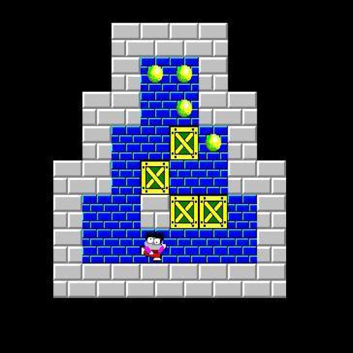
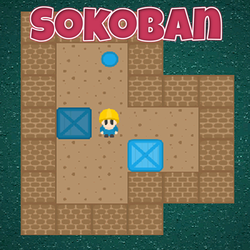
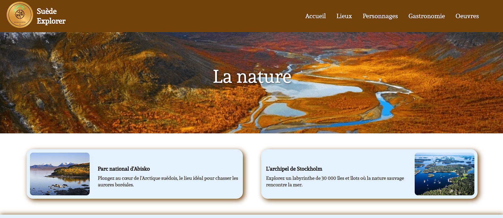

C1 : Réaliser un développement d'application

Mes traces : SAE 1.01 : Développement complet d'un jeu Sokoban en C.
Mes réussites : Développement intégral du jeu réalisé en autonomie totale.
Mes échecs et moyens pour réussir : Débuts difficiles liés à la découverte du C et au manque de temps. Compensé par un fort investissement personnel (2-3h par soir).
L'adaptation à d'autres situations : Aptitude à coder sur divers environnements et à m'adapter à d'autres langages (Java, Bash, PHP).
Mon autoévaluation : Niveau très satisfaisant.
C2 : Optimiser des applications informatiques

Mes traces : SAE 1.02 : Optimisation du Sokoban (création d'un script de résolution automatique).
Mes réussites : Réalisation en binôme où j'ai pris en charge la majorité des algorithmes complexes.
Mes échecs et moyens pour réussir : Complexité liée aux très nombreuses configurations à anticiper. Nécessité d'une réflexion très poussée sur l'optimisation.
L'adaptation à d'autres situations : Compétence applicable à l'optimisation d'algorithmes complexes en C ou Java.
Mon autoévaluation : Résultat correct compte tenu de la forte difficulté technique de cette SAE.
C3 : Administrer des systèmes informatiques communicants complexes

Mes traces : SAE 1.03 : Utilisation de Docker et création de scripts de transformation de documents (Bash/PHP).
Mes réussites : Gestion quasi-autonome du projet suite à l'absence d'un membre. Rendu d'un outil fonctionnel et sans bug.
Mes échecs et moyens pour réussir : Délais extrêmement courts couplés à la difficulté de maîtriser PHP et Bash à effectif réduit.
L'adaptation à d'autres situations : Capacité à collaborer sur des transformations de données et à utiliser des outils de conteneurisation comme Docker.
Mon autoévaluation : Compétence solide acquise grâce à une prise de responsabilité importante.
C4 : Gérer des données de l'information
Mes traces : SAE 1.04 : Création et gestion d'une base de données.
Mes réussites : Rédaction partielle des scripts de création et réalisation de bons rendus intermédiaires.
Mes échecs et moyens pour réussir : Difficultés rencontrées sur l'ordre d'exécution lors de la création de la base et erreurs sur la structure finale.
L'adaptation à d'autres situations : Connaissances transférables à l'administration globale de bases de données.
Mon autoévaluation : Compétence en cours d'acquisition qui nécessite d'être consolidée.
C5 : Conduire un projet

Mes traces : SAE 1.05 : Conception d'une page Web pour un site touristique sur la Suède.
Mes réussites : Réalisation complète d'une page web au sein d'un travail d'équipe.
Mes échecs et moyens pour réussir : Difficultés techniques avec le CSS, surmontées grâce à la communication et l'entraide de mes coéquipiers.
L'adaptation à d'autres situations : Capacité à m'intégrer dans un projet web et à concevoir n'importe quelle page HTML/CSS.
Mon autoévaluation : Niveau satisfaisant.
C6 : Travailler dans une équipe informatique
Mes traces : SAE 1.06 : Découverte de l'environnement économique et écologique.
Mes réussites : Conception de diaporamas en équipe et présentations orales maîtrisées.
Mes échecs et moyens pour réussir : Aucune difficulté majeure rencontrée sur ce projet.
L'adaptation à d'autres situations : Facilité à rédiger des rapports, des études et à présenter des sujets variés en contexte professionnel.
Mon autoévaluation : Bon niveau d'aisance et de compréhension.